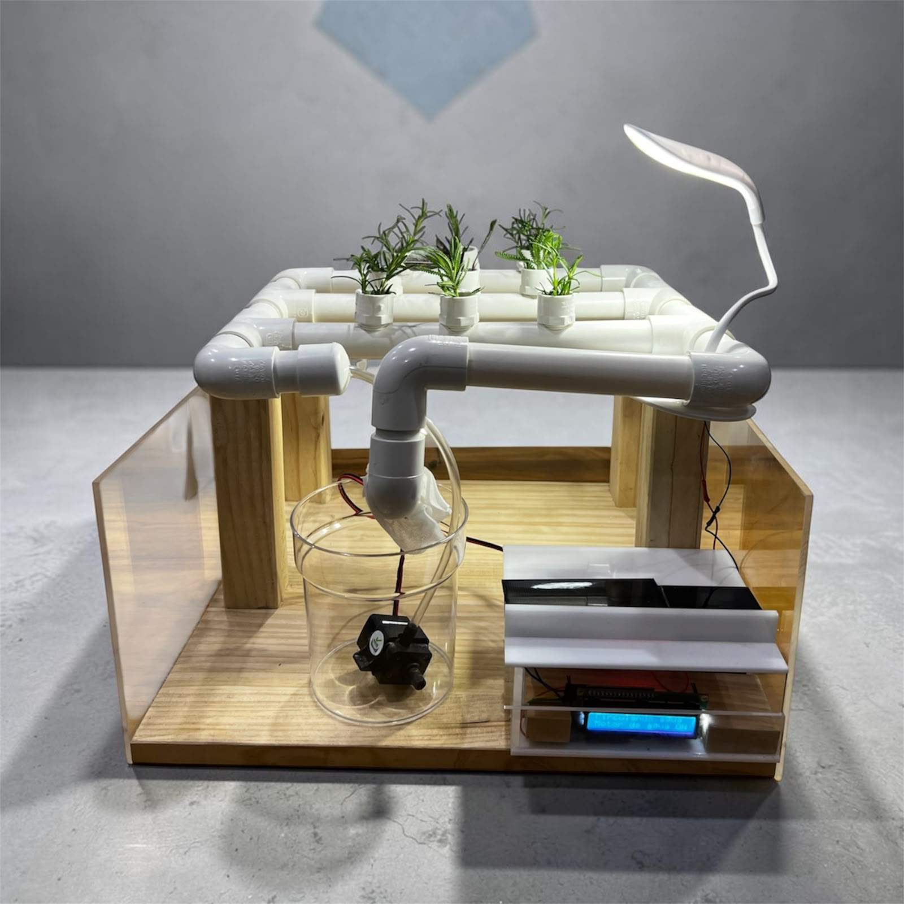
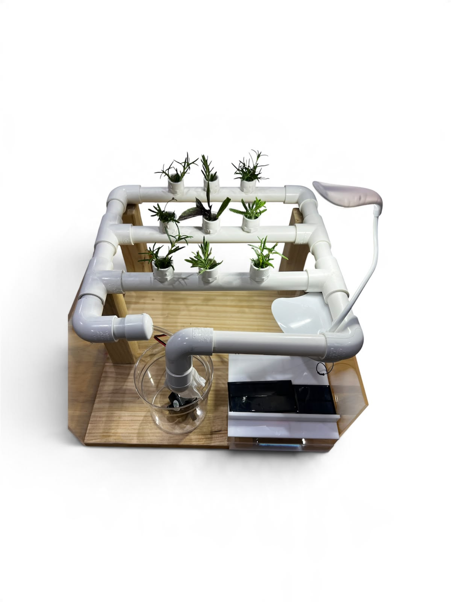
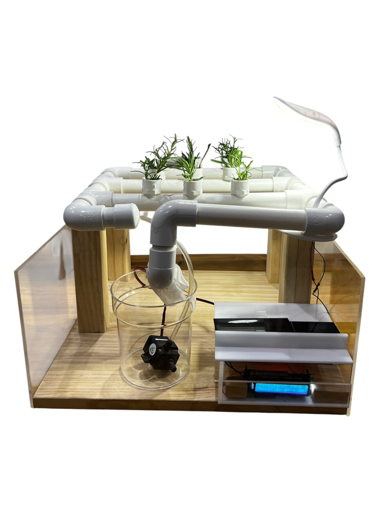
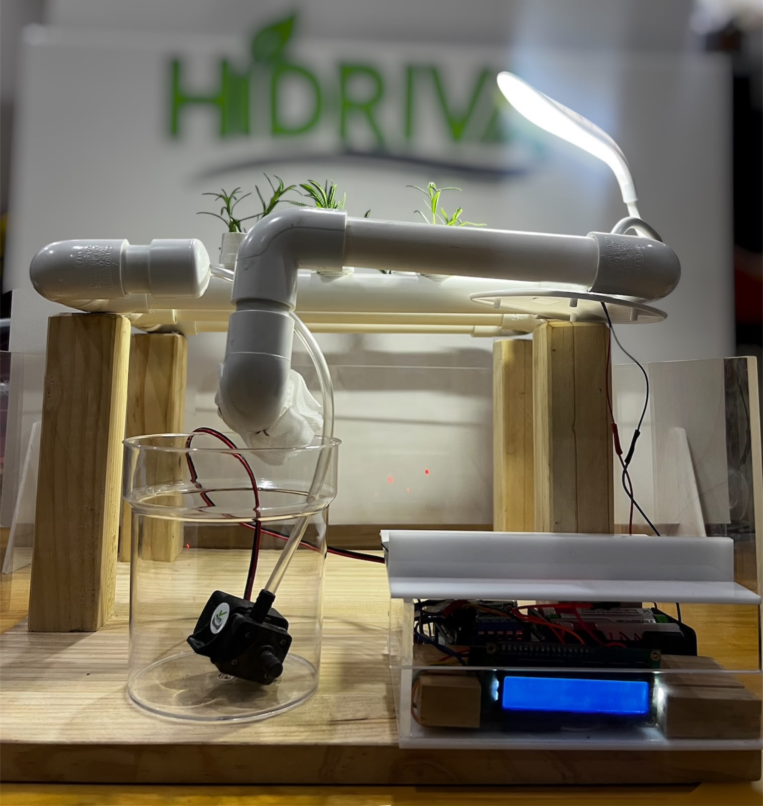
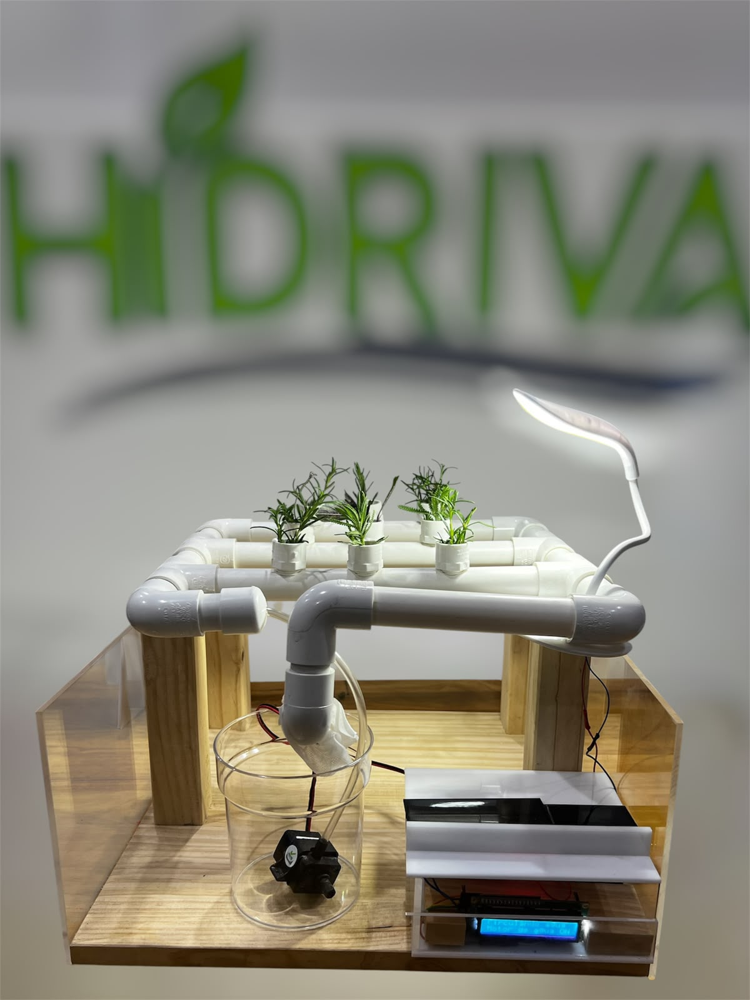

Hidroponía inteligente para hogares urbanos
Hidriva es un sistema hidropónico inteligente diseñado para hogares urbanos con poco espacio. Permite cultivar alimentos frescos sin suelo, utilizando agua y nutrientes controlados. Su diseño compacto y automatizado facilita el cultivo doméstico sostenible.





Hidriva busca mejorar la alimentación familiar, reducir gastos en alimentos frescos y promover la conciencia ambiental.
📧 Escríbeme: 1jmcelada1@gmail.com